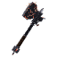
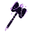
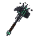
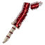
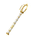
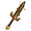

/events ukáže, co se právě děje. Běžné eventy startují samy, když je online aspoň pár hráčů.
☾ Blood Moon
Někdy v noci vyjde krvavý měsíc. Do rána mají monstra víc života a víc bolí, chodí ve dvojicích, objevují se Blood-crazed elity (3× XP a Bounty Tokeny), legendární materiály padají častěji a nejde spát.
✷ Rift
Každé 1,5–3 hodiny se u náhodného hráče otevře trhlina. Souřadnice se ohlásí hned, po 3 minutách z ní vyleze 5 vln monster až po Rift Ravagera a Rift Evokera. Odměna se dělí podle toho, kdo kolik udělal; nejlepší dostane i legendární materiál.
☠ Legend Hunt
Každé 2–4 hodiny je náhodný držitel legendy hodinu loven: svítí, jeho oblast se každých 5 minut ohlásí a jeho bounty se počítá dvakrát. Zato se mu schopnosti nabíjejí dvakrát rychleji. Když hodinu přežije, dostane tokeny.
Malé eventy
✦ Happy Hour – dvojnásobné XP, dvojnásobné dropy materiálů, nebo rituály dvakrát rychleji.
⚖ Forge Market – speciální nabídky v /shop.
✉ Golden Shipment – někde nedaleko spawnu se snese bedna; kdo ji najde první, ten bere.
⚔ Velké eventy
Velké eventy plánuje admin dopředu – server je ohlásí den, hodinu, 10 minut a minutu předem a posledních 10 minut běží odpočet.
☠ The Closing World – border se stahuje k jednomu místu. Smrt, odpojení nebo odchod ze světa = konec. Vyhrává poslední, kdo zůstane.
⚔ The Hunt – všichni jsou vidět na locator baru. Vyhrává nejvíc zabitých hráčů.
☠ The Forge Colossus – obří boss: dupe, hází ohnivé koule, přitahuje a volá kostlivce. Ublížit mu můžou jen hráči. Vyhrává nejvíc poškození.
Během velkého eventu se týmy rozpadnou: spoluhráči i spojenci se můžou navzájem zranit a zabít – každý sám za sebe. Po eventu je všechno zase jako dřív. Kdo na eventu umře, nechá si výbavu (zbraně, nástroje, brnění, legendy) – jídlo, jablka, bloky, pavučiny, perly, lektvary a exp bottly vypadnou.
Mnohem silnější než legendy – ale po 7 dnech vyprchají, ať jsou kdekoli. Nemají hvězdy, nedají se ukovat a může jich být víc.

Chainbreaker
Netherite Axe · ⚔ 13 · ⚡ 1.0
Every chain it ever wore, it broke.
Pasivně
Strength I
Při zásahu
Shattered Shackles: after any ability, your next 2 hits deal +30% and 50% of it to everyone around the target (3 blocks).
Při zásahu
Lashing Chain (20%, every 4s at most): a chain jumps to the nearest other enemy (5 blocks), 4 damage, Slowness II, and pulls you to it.
RegicideF · ⏱ 14 s
Hook the enemy you look at (10 blocks), dash to it and strike for 8 damage. Heals 2 + up to 8 more the lower your health.
UsurpShift + F · ⏱ 90 s
Rip the Shift+F ultimate out of the nearest enemy legend (12 blocks). For 30s it's yours: Shift+F unleashes it once. Until then its owner can't use it.

Worldsplitter
Netherite Axe · ⚔ 14 · ⚡ 1.0
The world closed in. This is what was left.
Pasivně
Resistance I, Strength I
Při zásahu
Crushing Weight: fall onto the target for +1.2 dmg per block fallen (max +24). Standing above it: +2 per block (max +10).
Split the WorldF · ⏱ 25 s
Lift every enemy around you into the air, then slam them down (max 16 damage).
Event HorizonShift + F · ⏱ 30 s
A 9-block gravity field for 7s. Enemies inside are slowed and yanked back if they try to leave.

Warden of the Pit
Netherite Sword · ⚔ 13 · ⚡ 1.0
The last hunter fell. Something older picked up the mace.
Pasivně
Resistance I
Při zásahu
Black Iron Aura: every 3rd hit ignites an aura for 4s - 1.5 damage every half second to every enemy within 3.5 blocks.
Při zásahu
Iron Will: 30% of the damage you deal becomes a shield (max 6 hearts) that soaks up damage; it fades 6s after your last hit.
Grip of the DeepF · ⏱ 16 s
A shadow hand shoots forward (12 blocks) and drags everyone along its line to you: 5 damage and Slowness II.
Dominion of AshShift + F · ⏱ 100 s
Drag the enemy you look at (10 blocks) into a sealed ring for 7s - nobody leaves, nobody gets in. Whoever survives takes the loser's power: Strength I, Resistance I and 3 hearts healed for 20s.

Bloodfang
Netherite Sword · ⚔ 11 · ⚡ 1.8
Taken from the last hunter standing.
Pasivně
Speed II. Below 35% HP you regenerate 2% of your max HP every second.
Při zásahu
Heals 20% of damage dealt
Při zásahu
Cleave: charged hits deal 40% damage to everyone within 3 blocks.
Blood CrescentF · ⏱ 8 s
Spin a full circle: 10 damage to everyone around you, +1.5 hearts healed per enemy hit.
Feeding FrenzyShift + F · ⏱ 50 s
Pay 10% of your current health, then regenerate 50% of your MAX health over 8s with Speed III. Debuffs don't stick.

Dawnspire
Netherite Sword · ⚔ 12 · ⚡ 1.4
The colossus fell at dawn. The light stayed.
Pasivně
Speed I
Při zásahu
Radiant Mark: Dawnspire's abilities mark what they touch for 6s. Your next hit on a marked enemy bursts it for +5 damage.
Při zásahu
Sunshard: every 3rd hit throws a ball of light that bursts on the target: 4 damage, Slowness II and a Radiant Mark (3 blocks).
Prism SnareF · ⏱ 14 s
A prism of light flies forward (18 blocks): the first 2 enemies it passes are rooted for 2s, take 4 damage and get marked.
Daybreak LanceShift + F · ⏱ 60 s
Gather the light (0.8s), then fire a beam 32 blocks long: 10 damage and fire to all it touches - marked enemies take 60% more.

Titan's Echo
Netherite Sword · ⚔ 12 · ⚡ 1.6
Torn from the Forge Colossus.
Pasivně
Resistance I
Při zásahu
Echo: 1.25s later the hit repeats for 60% of its damage.
Titan's ReturnF · ⏱ 20 s
Snap back to where you stood 5s ago and regain the health you had then.
Colossal ResonanceShift + F · ⏱ 30 s
Everyone you hurt in the last 10s takes 70% of that damage again (max 20).